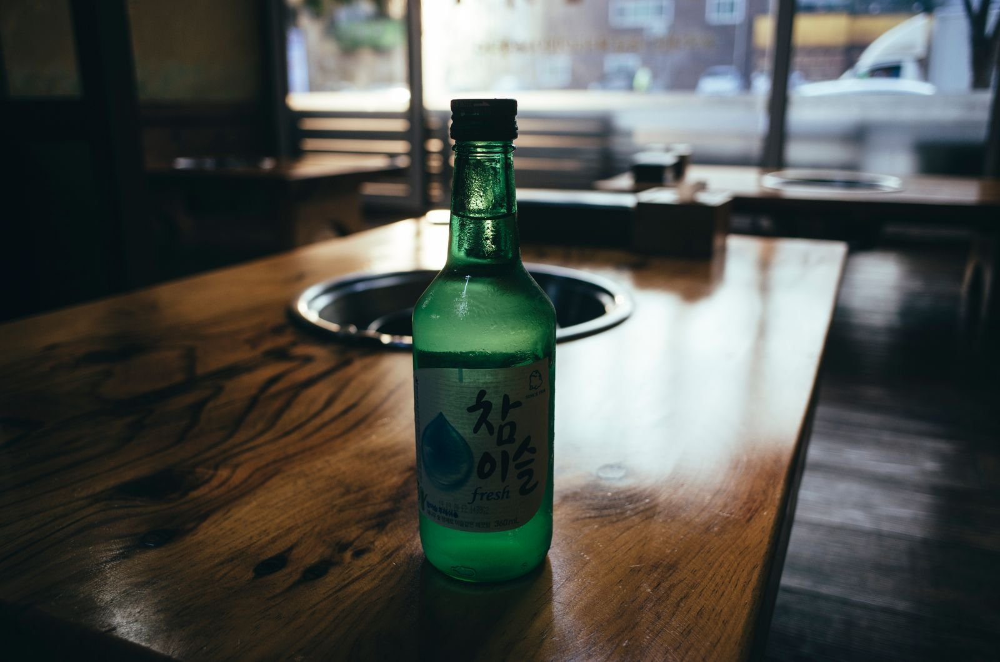

타이베이 시먼딩 한국 소주, 어디서 사야 제일 저렴할까?
홍러우 뒤 100m 안에 모인 한국 식품점 네 곳, 후기에 남은 한 병 가격, 사기 전에 챙길 나이 확인까지 — 숙소 가는 길에 들르기 좋게 묶었습니다.
게시
"대만 편의점 소주는 비싸던데, 시먼딩에 한국 소주 싸게 파는 데가 있다면서요?" 시먼딩 홍러우(西門紅樓) 뒤 西寧南路(시닝난루)와 內江街(네이장제) 일대에는 한국 식품점이 모여 있어서, 시먼딩에서 한국 소주를 싸게 사려면 이 골목이 첫 후보예요. 매장 공식 안내, 구글 지도 후기, 대만 현지 기사와 블로그를 바탕으로 2026년 10월 기준으로 정리해봤어요.
01 · 시먼딩 한국 소주 가격, 후기로 한눈에 비교하기
| 어디서 | 후기 속 가격 (360ml 한 병) | 자료 시점 |
|---|---|---|
| 韓聯 한국 식품점(시먼딩) | 꿀레몬 소주 NT$120 (작은 소주잔 증정) | 2022년 2월 구글 지도 후기 |
| 韓聯 (옛 기록) | 오리지널 NT$120, 유자 소주 NT$150 | 2015년 SNS 가격 기록 |
| 시먼딩 한국 식품점 vs 대형마트 | 과일 소주 NT$140 vs 대형마트 NT$169~189 | 온라인 후기(작성 시점 불분명) |
| 대만 일반 매장 | 보통 NT$180 안팎, NT$150짜리도 있음 | 2025년 4월 대만 블로거 글 |
| 대만 한식당 | NT$250~300 이상 | 2025년 4월 대만 블로거 글 |
후기에 남은 시먼딩 한국 식품점 소주 값은 NT$120~150 선이고, 다른 매장 이야기는 NT$150~180대가 많아요. 'NT$100에 판다'는 이야기도 있지만 이번에 찾은 자료에서는 확인되지 않았어요. 브랜드·맛·행사에 따라 다르니 현장 가격표를 꼭 보세요. 편의점과 대형마트의 공식 가격표도 찾지 못해서 위 표는 모두 후기 기준이에요.
02 · 홍러우 뒤 한국 식품점 4곳, 위치와 영업시간
韓聯食品百貨 (한련) 西寧南路82巷8號. 공식 안내 기준 월~토 10:00~20:00, 일 12:00~17:00이고, 시먼역 1번 출구 근처예요. 한국어 상담이 된다고 안내하고, 네 곳 중 가장 크다고 소개됩니다.
百昌韓式百貨 (백창) 西寧南路201號. 소주·과일 소주·막걸리 등 술 종류가 30가지가 넘는다고 소개된 곳이에요. 구글 지도 기준 월~토 10:00~20:00, 일요일 휴무예요.
天颺韓國食品百貨 內江街63號. 업소용 대용량이 많지만 낱개로도 판다고 소개됐어요.
高麗商行 內江街54號. 가장 작은 가게지만 과자 종류가 가장 많다고 소개됐어요.
2022년 대만 기사에 따르면 네 곳은 西寧南路와 內江街가 만나는 곳을 중심으로 반경 100m 안에 모여 있어서, 한 바퀴 돌며 가격표를 비교하기 쉬워요. 天颺와 高麗商行은 영업시간을 확인하지 못했으니 방문 전에 구글 지도로 확인하세요.

03 · 시먼딩에서 한국 소주 싸게 사는 요령
한 바퀴 돌고 비교 네 곳이 걸어서 몇 분 거리라 같은 소주 가격을 가게마다 비교해 보기 좋아요.
오리지널이 과일 소주보다 쌀 수 있어요 한련 옛 기록에서도 오리지널 NT$120, 유자 소주 NT$150처럼 차이가 났어요.
여러 병이면 박스 가격 물어보기 한련은 도매와 소매를 함께 하고, 상품 안내에 소주를 20병 한 박스 단위로 적어 두었어요. 박스 가격은 매장에 물어보세요.
술은 매장에서만 한련 상품 안내에 술은 온라인으로 주문할 수 없다고 적혀 있어요. 직접 가서 사야 합니다.
04 · 사기 전에 챙길 것
만 18세 미만은 살 수 없어요 대만은 18세 미만에게 술을 팔지 않고, 한련 상품 안내에도 '未滿18歲請勿飲酒(18세 미만 음주 금지)'가 적혀 있어요. 나이 확인을 요청받을 수 있으니 신분증을 챙기면 편해요.
일요일 오후는 서두르기 한련은 일요일에 12:00~17:00만 열고, 백창은 구글 지도 기준 일요일에 쉬어요.
한국에 가져갈 거라면 한국 입국 주류 면세는 합계 2L, 미화 400달러 이하예요. 360ml 소주 5병이면 1.8L입니다. 자세한 건 대만 간식·술 기내 반입 가이드를 보세요.
"西門町的韓貨商行除了有超多在大賣場找不到的商品之外，動輒 30%~50% 的差價絕對值得你專程前往." — 시먼딩 한국 식품점은 대형마트보다 30~50% 싼 경우가 많다는 2022년 대만 기사 내용이에요.
소주와 함께 먹을 저녁은 타이베이 맛집 지도에서 고를 수 있고, 한식이 그리우면 Nabiya 나비야 한식도 지도에 있어요. 한잔 더 하고 싶다면 타이베이 바 목록도 있습니다. 숙소를 고르는 중이라면 시먼·메인역·중산 숙소 위치 비교를 참고하세요.
지도에서 시먼딩 근처 맛집도 확인해보세요
소주 사러 가는 길에 들를 타이베이 맛집을 지도에서 미리 찜해 두세요.